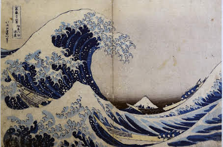

かながわおきなみうら
木刻版畫
葛飾北齋 / Katsushika Hokusai
神奈川沖浪裏
《神奈川沖浪裏》是日本浮世繪畫家葛飾北齋的著名木刻版畫，出版於1831年至1833年間，是冨嶽三十六景系列作品。該畫以富士山為背景，描繪了「神奈川沖」（即神奈川外海，現橫濱市神奈川區對出的海面上）的巨浪掀卷著漁船，船工們爲了生存而努力抗爭的圖像，是葛飾北齋的代表作，也是舉世聞名的日本藝術作品[3]。該作品出版時印製了數千幅，但現存於世的估計僅有數百幅，部分收藏於大英博物館、大都會藝術博物館、東京國立博物館等大型博物館。